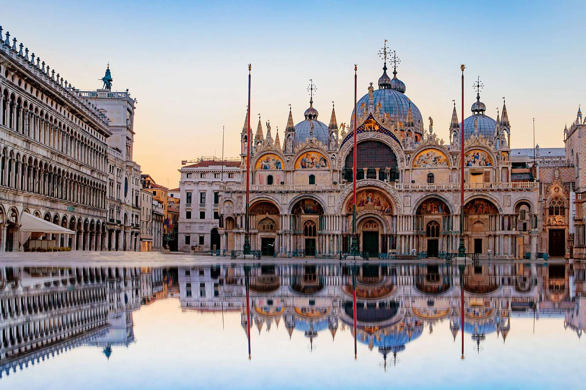
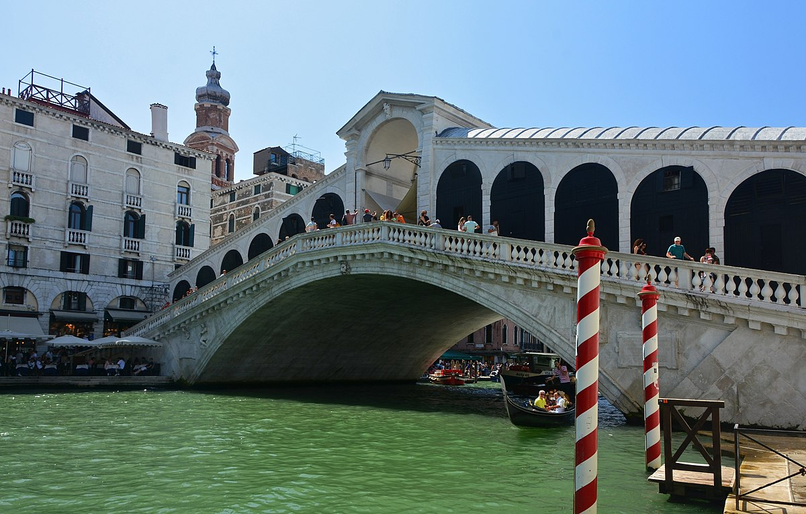

Venice is a beautiful city in northeastern Italy, known for its canals, art, and architecture. There are many things to see and do in Venice, including:
Places to Visit in Venice
-
St. Mark's Basilica
St. Mark's Basilica is a stunning example of Byzantine architecture and is one of the most famous churches in Venice. It is located in St. Mark's Square and features beautiful mosaics and intricate design details.
 -
Doge's Palace
The Doge's Palace is a beautiful Gothic palace that served as the residence of the Doge of Venice. It is located on St. Mark's Square and features stunning architecture and artwork, including works by famous Venetian painters such as Tintoretto and Veronese.

-
Rialto Bridge
The Rialto Bridge is one of the most iconic landmarks in Venice and is one of the oldest bridges spanning the Grand Canal. It features stunning architecture and offers beautiful views of the canal and surrounding buildings.
